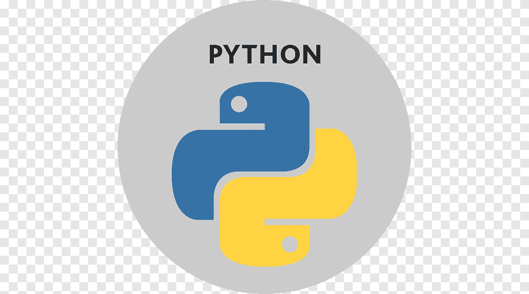
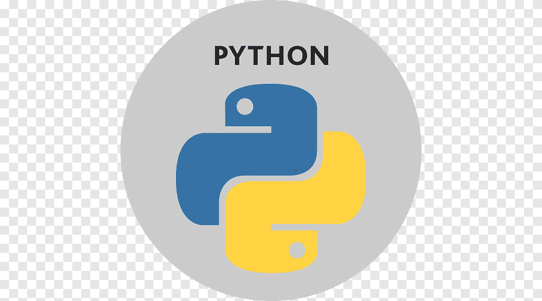

Espronceda 45 1º 6ª
Barcelona
Espronceda 45 1º 6ª
Barcelona 615561792
615561792 


Perfil
Durante muchos años he trabajado dirigiendo el departamento de entrevistadores de la zona de Cataluña de una compañía multinacional de investigación de mercados. Esto me ha dotado de una gran experiencia en la dirección de equipos, en formación y selección de personal, así como me ha dado un gran poder de organización y de resolución de incidencias de manera rápida e imaginativa.
Cuando decidí hacer una reconversión laboral, utilice mi experiencia en la investigación de mercados haciendo una búsqueda de información y prueba en el sector it. Después de haber probado varios programas como python, ruby o javaScript. decidí decantarme por la creación de páginas web con html,css, javaScript, TypeScripe y algo de node, en las que aún me sigo formando . Así aunando la inquietud de nuevos retos con la experiencia previa puedo presentar un perfil más completo.
Historia laboral
GFK-Emer septiembre 2005 - noviembre 2019
Jefa de campo personal (12 años):
- Dirección del equipo de encuestadores, auditores y mystery shopper. De la zona de Cataluña.
- Realización de nóminas y gestión de pagos del equipo
- Realizar selección de equipo mediante entrevistas personales o telefónicas
- Formación de personal mediante cursos de capacitación y brifings
- Coordinación de equipos de encuestadores incluidos la supervisión presencial y personal, así como la revisión de cuestionario
Silvia Roca SL mayo 2004 - mayo 2005
Responsable de campo:
- Coordinación de equipos de encuestadores incluidos la supervisión presencial y personal, así como la revisión de cuestionario.
Clau Consultors agosto 2000 - junio 2004
Encuestadora personal:
- Realización de encuestas cuantitativas en calle, hogar, telefónico, sala y mystery shoping
- Realización de encuestas en profundidad
Formación
- Desarrollo Full-Stack Bejob/Samsung DesArrolladoras junio 2021
- Desarrollo Front-End con HTML5 y CSS3 Bejob/Samsung DesArrolladoras Enero 2021
- Introducción al desarrollo web Bejob/Samsung DesArrolladoras Noviembre 2020
- Programación moderna con Python acelera España III Noviembre 2020
- Python for beginners Mioti Octubre 2020
- Introducción a Ruby BArcelona Activa Octubre 2020
- Wordpress esencial 1 y 2 Barcelona Activa Agosto 2020
- Bup y cou Institut Maragall septiembre 1991 - junio 1995